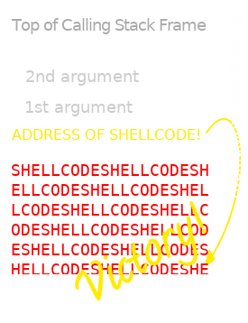
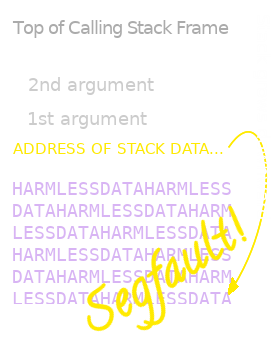
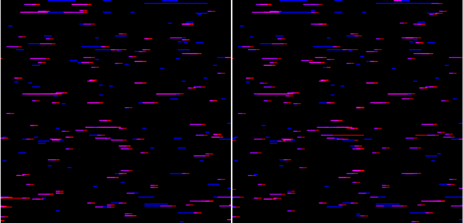
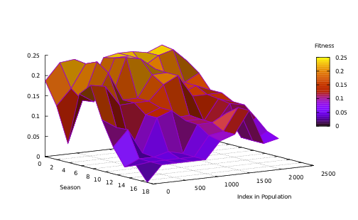
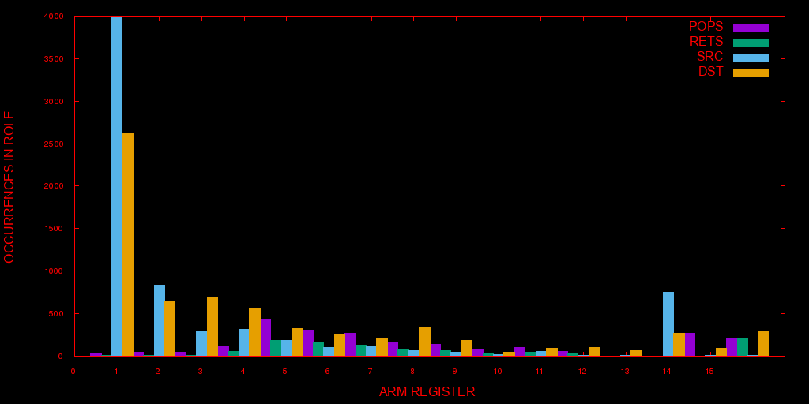

Urschleim in Silicon: The Slideshow
Created: 2018-04-17 Tue 01:27
Introductory Remarks
The Concept of Return-Oriented Programming
The Fundamental Problem of Cybersecurity
At bottom, there is no essential distinction between data and code.
"Data" is just information your system trusts.
Consider the Stack

- the hacker feeds some input data to the process
- which is written to a buffer in stack memory
- but which overruns the buffer
- corrupting the frame's return address
Consider the Stack, Smashed

- so that it points into the buffer
- a buffer that turns out to contain machine code
- to which the program counter "returns"
- executing it just as it would its own instructions!
\(\textit{DEP}~~/~~W \oplus X\)

- One way of mitigating this is to try to ensure that no page of memory is both writeable and executable.
- The idea being that data should be writeable, but never executable, while code should be executed, but not written at runtime.
So, is code "wherever the program counter's pointing"?
No. It's far worse than that.
Subverting \(~~W\oplus X\)
- \(W\oplus X\) may prevent the execution of input data, but it doesn't prevent attempts to return to that data.
- Why should the hacker need to supply their own machine code?
- There's quite a bit just laying around, in executable memory.
- Why not just build a payload with whatever's handy?
It's what MacGyver would do
But how?
\(W\oplus X~~\) is a Leaky Abstraction
- It rests on all-too-narrow concepts of "instruction" and "execution".
- The payload's instructions don't need to be bytes of machine code.
- They just need to influence control flow, in a controllable way.
So is the Structured Programming Machine Model
- The machine model on which structured programming is based already carves up an executable into chunks that return control after being dispatched.
- To the programmer, these are "functions", but this is too granular a viewpoint.
- Any chunk of code ending with a return returns control to whomever controls the stack.
- And our data controls the stack!
The ROVM supervenes on the SPMM

- Chunks of code that return control are called "gadgets".
- They form a spontaneous ISA, whose program counter is the stack pointer of the underlying architecture.
- Let's call this ISA a "Return-Oriented Virtual Machine".
We can program this machine with input data…
- All we need to do is to discover and supply a buffer of instructions.
- These are not instructions for the underlying architecture, but for the ROVM.
- \(W\oplus X\) is blissfully unaware of the ROVM, and powerless to prevent us from executing data as ROVM code.
…and so can natural selection.
Design and Implementation of ROPER
Bird's eye view

Gadget Harvest

Tournament Selection

Genomic Structure
- Each genome is a one-dimensional chain composed of clumps.
- A clump is a gadget address \(a\), followed by \(\texttt{SP}_\Delta(a)-1\) machine words
- where \(\texttt{SP}_\Delta(a)\) is the (estimated) number of words that \(*a\) will pop from the stack, when run.
- Several "epigenetic" fields of metadata are also associated with both the chain and clump structures.
Genetic Operators: Clumpwise Mutation
- address substitution
- arithmetical & logical manipulation of dwords
- indirection/dereference of dwords
- permutation of pairs of dwords
Genetic Operators: Chainwise Crossover
- restricted to single-point crossover
- splice point selected by weighted random choice, using the average of each link's previous hosts' fitness scores, to favour adaptive gene linkage
- recently, a mechanism to promote homologous crossover in fitter specimens has been introduced
Algebraic properties of genetic operators
- Mutations form a cyclic group under concatenation.
- Crossover is associative, forms a cyclic group under concatenation, and commutes with mutation.
- These properties permit the operators to traverse the space of genetic combinations without ratcheting the population into a corner.
Ontogenesis
- The genotype is mapped to its phenotype by executing it in an emulated CPU, into which the binary from which it was derived has been loaded.
- The chain is serialized into an array of dwords,
- loaded into the stack space of the target process
- its initial address is popped into the CPU's program counter
- and the emulation begins.
Ontogenesis
- This process returns a snapshot of CPU behaviour from the chain's execution:
- the resulting register values
- a window of memory surrounding each dereferenced register value
- and the list of addresses visited by the chain.
- This data is passed to one of several task-specific fitness functions.
Evaluation Process

Experimental Studies
The Environment

Distribution of gadgets in tomato-RT-N18U-httpd.
Tasks and Fitness Functions
- An arbitrary and inscrutable fitness function
- System call preparation
- Classification tasks:
- An artificial, linearly-separable dataset
- The Iris dataset
- A Snake game
Kafka function with Crash Penalty
The address visitation heatmap shows no evident loss of diversity, even after 212 seasons, suggesting a robustly ergodic system. 
System Call Preparation
- The goal here is to prepare the CPU for a system call, with the registers containing and pointing to the necessary arguments.
- The fitness function uses a combination of numerical distance and bitwise hamming distance, for immediate values, and memory proximity for indirect values.
- A successful evolutionary run delivers a payload that can be used for practical purposes.
System Call Preparation
Champion of the Wiwzuh population:
0000b4ac pop {r4, r5, r6, r7, r8, pc} 0000d1a0 cmp r0, #0 0000d1a4 popeq {r3, r4, r5, pc} 00016654 cmp r0, #0 00016658 ldr r3, [pc, #4] 0001665c moveq r0, r3 00016660 pop {r3, pc} 0001706c ldm sp, {r0, r1} 00017070 add sp, sp, #0x10 00017074 pop {r4, r5, r6, pc} ;; R0: 0001f62f R2: 00000000 ;; R1: &0001f62f R7: 0000000b ;; to call execv("/tmp/flashXXXXXX", ["/tmp/flashXXXXXX"], NULL) 00018fc4 svcvc #0xffffff
Fitness landscape traversed by the wiwzuh population

The Enigma of Stray Gadgets
- This task also produced a number of specimens whose traces are too long and complex to display in detail here, but which were especially interesting for their labyrinthine nature, and the degree to which their execution traces strayed from the harvested gadget set.
- I will nevertheless try to display one here.
The Enigma of Stray Gadgets
These were of interest in two respects:
- they contained complex heuristic breakers making them likely to bypass various IDS systems in the literature, as a sheer evolutionary spandrel
- theoretically, their behaviour was enigmatic. Straying is dangerous for chains, and comes with great risk of crashing, yet it appeared with prima facie improbable frequency in our populations.
A simple classification task
- For the classification tasks, I initially used a common, bid-based algorithm to map behaviour to classification decisions on data samples.
- A set of output registers was mapped to the class list, and data was classified according to the register containing the greatest signed value.
Fair initial results

An interesting case of malignancy

Here, the gene responsible for correct classification of the data was also responsible for crashing the execution. It rapidly took over the population.
An interesting case of malignancy

The Iris Dataset

ROPER on the Iris Dataset
- This dataset proved a serious challenge for ROPER, which rarely achieved better than a 66% detection rate (using the bid-bin method).
- Success only came with the introduction of a fitness sharing mechanism.
Iris without Fitness Sharing

Iris with Fitness Sharing

Bit-masks over Bid-bins
The uneven distribution of register usage puts a skew on any classification task using the register bid-bin method. 
Bitmask Classification Specimens
IN: ffffff98 d
0000b4b4 | pop {r4, r5, r6, r7, r8, pc}
0000d9a8 | cmp r0, #0
0000d9ac | moveq r0, r3
0000d9b0 | pop {r3, pc}
0001010c | rsb r5, r5, r0
00010110 | cmp r5, #0x40
00010114 | movgt r0, #0
00010118 | movle r0, #1
0001011c | pop {r4, r5, r6, pc}
0000cdd0 | subs r4, r0, #0
0000cdd4 | popeq {r4, r5, r6, pc}
0000d9ac | moveq r0, r3
0000d9b0 | pop {r3, pc}
00016168 | add r0, r4, r0
0001616c | pop {r3, r4, r5, pc}
0000ad94 | mov r0, r3
0000ad98 | pop {r4, pc}
0001228c | add sp, sp, #0x364
00012290 | add sp, sp, #0x400
00012294 | pop {r4, r5, r6, r7, r8, sb, sl, fp, pc}
OUT: ea->0 0->68732e00 ffffff98 ea->0 0->68732e00 0->68732e00 0->68732e00
.... 0->68732e00 0->68732e00 0->68732e00 0->68732e00 0->68732e00 0->68732e00 2b7eb->0 0->68732e00 0->68732e00
R0 (bin): 00000000000000000000000011101010
CLASS: RED
Greater complexity in control flow, perfect classification results, no crashing.
IN: a3 fffffd6f
0000b4b4 | pop {r4, r5, r6, r7, r8, pc}
0000d9a8 | cmp r0, #0
0000d9ac | moveq r0, r3
0000d9b0 | pop {r3, pc}
0001010c | rsb r5, r5, r0
00010110 | cmp r5, #0x40
00010114 | movgt r0, #0
00010118 | movle r0, #1
0001011c | pop {r4, r5, r6, pc}
0000cdd0 | subs r4, r0, #0
0000cdd4 | popeq {r4, r5, r6, pc}
0000cdd8 stray | ldr r1, [pc, #0x1c]
0000cddc stray | mov r2, r4
0000cde0 stray | mov r0, #0
0000cde4 stray | bl #0x59e0
000127c4 stray | push {r1, r2, r3}
000127c8 stray | push {r0, r1, r2, r4, r5, r6, r7, r8, lr}
000127cc stray | mov r6, r0
000127d0 stray | mov r5, #0x400
000127d4 stray | add r7, sp, #0x28
000127d8 stray | ldr r8, [sp, #0x24]
000127dc stray | mov r0, r5
000127e0 stray | bl #4294933396
0000a374 stray | add ip, pc, #0
0000a378 stray | add ip, ip, #0x1e000
0000a37c stray | ldr pc, [ip, #0x5a8]!
0000a138 stray | str lr, [sp, #-4]!
0000a13c stray | ldr lr, [pc, #4]
0000a140 stray | add lr, pc, lr
0000a144 stray | ldr pc, [lr, #8]!
OUT: 400->0 1bc01->7365720a 1->7368732e 96106ace 1->7368732e 400->0 0->68732e00
.... 2b02b->1 1bc01->7365720a 0->68732e00 0->68732e00 0->68732e00 28924->a138 2afff->127e4 28868->0 0->68732e00
R0 (bin): 00000000000000000000010000000000
CLASS: BLUE